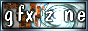
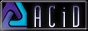

|
|
The Scene Portal - The HiRes Scene |
|
VGA stands for Video Graphics Array, a video mode and capability designed to display graphics on a CRT. In terms of the "scene", a VGA is generally referred to as any picture or image drawn with a computer painting and/or rendering program, in any video mode (but most commonly, in the VGA (640x480x256) or higher (SVGA) video modes.) Some of the more commonly used programs are Adobe Photoshop(tm), Corel PhotoPaint(tm), Autodesk 3D Studio(tm), and 3DS Max(tm).
In general, the styles used to draw a "VGA" are very diverse - but they can be divided into two large categories, rendered and non-rendered work. Rendered work, as the name suggests, is art drawn with the aid of a computer rendering program, such as 3D Studio(tm) or POV Raytracer(tm). Non-rendered work is a hand-drawn, "freestyle" form of drawing, which encompasses everything from airbrushing to pixel-by-pixel artistry.
Text from 'Version 1.80 of the DARK Illustrated FAQ'
|
|
|
Artcore -
| Free resources, information and oppertunities for artists
|
|
|
Hirez.org -
| The light at the end of the tunnel is approching, Prepare thy self
|
|

|
GFX Zone -
| The biggest demoscene graphics gallery on the net
|
|

|
ACiD Productions -
| This group is where it all began
|
The HiRes Scene - Groups
The HiRes Scene - News
neithernor.org - neithernor.org is offering news, links, forum, cgi & webspace.
Acheron - underground news . music . code . and more
The HiRes Scene - Archives and Resources
Artpacks @ Acid - The authoritative source for artpacks and graphics applications
Hornet - Discontinued but contains artwork from 1990 to 1998
The HiRes Scene - Electronic Magazines
|